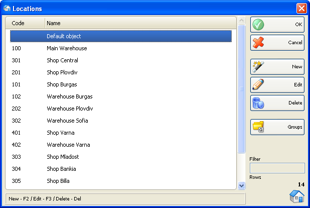

Localizare
Fereastra� Localizare se va folosi pentru selectarea unei localizari. pentru adaugarea unei localizari noi si pentru editarea listei de localizari. Pentru a selecta o localizare din lista, click pe linia corespunzatoare din lista (tabel). Click pe butonul OK pentru confirmare. Click Cancel pentru a iesi din fereastra fara a efectua selectarea.

Se pot folosi butoanele New, Edit, Delete pentru a adauga o localizare noua si a edita sau sterge o localizare existenta. Pentru a edita sau sterge o localizare, trebuie sa selectati localizarea respective dupa care sa confirmati actiunea dorita.
�2006-2012 Microinvest, All rights reserved